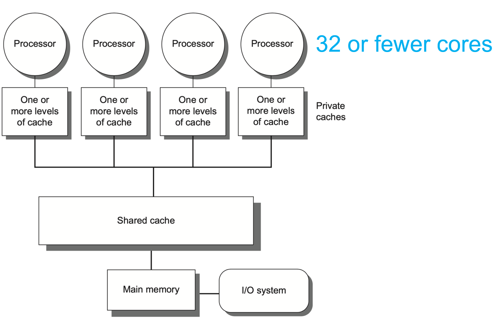
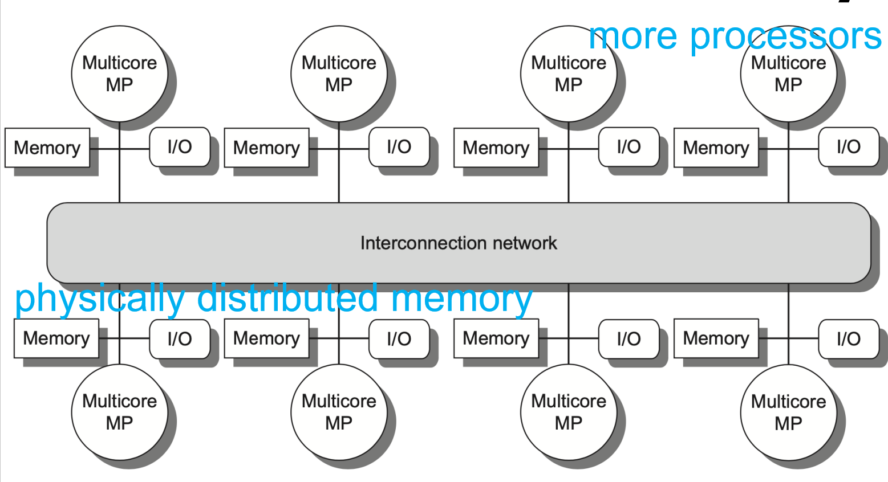
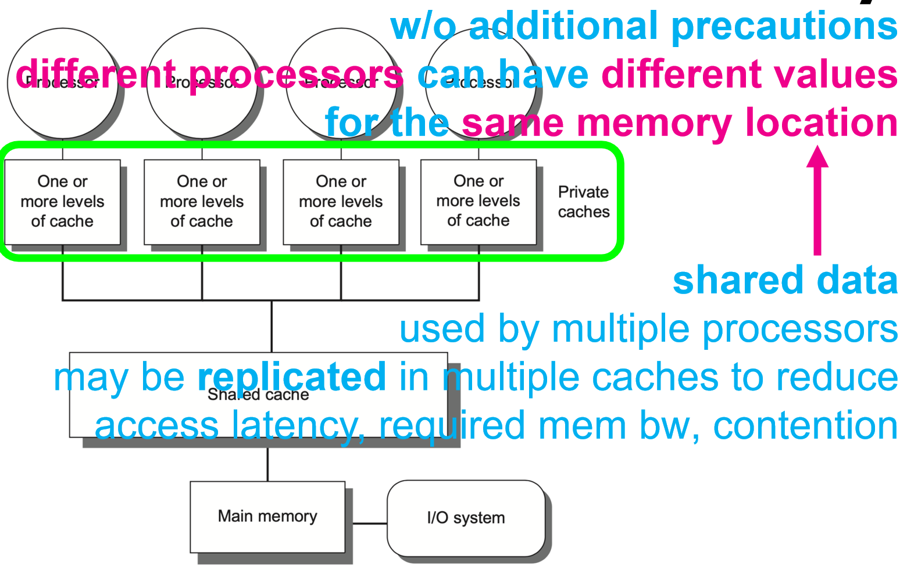
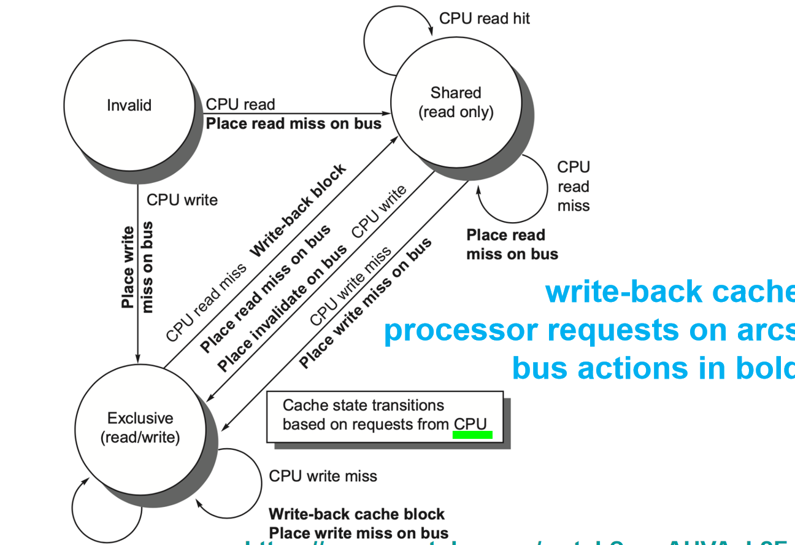
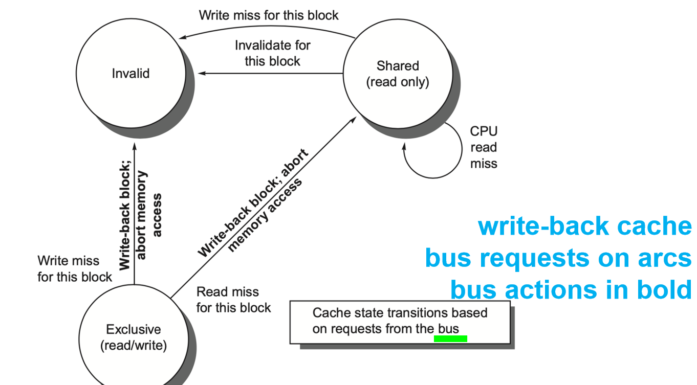

计算机体系结构5:线程级并行(Thread-Level Parallelism, TLP)
1 从 ILP 到 TLP：并行维度的跃升
- 指令级并行 (ILP)：在一个线程（Thread）内部，并行执行不同的指令。
- 线程级并行 (TLP)：同时执行多个独立的线程。
设计的哲学转变： ILP的并行性是由硬件（动态）或编译器（静态）来隐式（Implicitly）发掘的，对程序员来说是透明的。而TLP的并行性，则是由程序员或软件来**显式（Explicitly）**定义的。程序员将一个大任务分解成多个可以并发执行的子任务（线程），然后交由多个处理器核心去执行。
这种转变，将并行性的来源从微观的指令之间，提升到了宏观的任务之间。我们今天要学习的多处理器系统，正是为承载和加速TLP而设计的。
1.1 多处理器的基本模型：MIMD
根据经典的费林分类法，多处理器属于MIMD (Multiple Instruction, Multiple Data) 架构。
- Multiple Instruction Streams：每个处理器核心都有自己独立的PC和控制单元，可以独立地取指和执行自己的指令序列（线程）。
- Multiple Data Streams：每个核心操作于自己的数据，但它们通常又需要通过某种机制来访问和操作共享的数据，以完成协同工作。
这种“独立自主”又“需要协作”的特性，是MIMD架构强大灵活性和巨大挑战的根源。
1.2 现代多处理器的两种形态
- 多核处理器 (Multicore)：将多个处理器核心（Core）集成在同一块芯片上。这是我们今天智能手机、笔记本和台式机中的主流形态。
- 多芯片多处理器 (Multi-chip Multiprocessor)：由多个独立的处理器芯片组成一个系统，通常用于服务器和数据中心。这些芯片上的每一个，本身可能就是一个多核处理器。
无论是哪种形态，它们都面临一个共同的核心设计问题：这些独立的处理器核心，应该如何共享数据和进行通信？ 这个问题的答案，引出了两种主流的多处理器内存架构。
1.3 多处理器架构
-
集中式共享内存 (Centralized Shared-Memory) / 对称多处理器 (SMP) 
- 设计哲学：“所有内存生而平等”。系统中只有一个集中的主内存，所有的处理器核心通过一个共享的总线或交换网络连接到这个内存。
- 核心特征：
- 统一内存访问 (Uniform Memory Access, UMA)：任何一个处理器访问内存的任何位置，其延迟都是相同的。这极大地简化了编程模型，程序员无需关心数据存放在哪里。
- 适用范围：这种架构的可扩展性有限。随着核心数量增加，共享内存总线的带宽会迅速成为瓶颈。因此，它通常用于核心数量较少的系统（例如，小于32核）。
-
分布式共享内存 (Distributed Shared Memory, DSM) 
- 设计哲学：“远亲不如近邻”。为了解决SMP的扩展性问题，DSM将物理内存分布到各个处理器节点（Node）上。每个处理器都拥有自己的“本地内存”。
- 核心特征：
- 非统一内存访问 (Non-Uniform Memory Access, NUMA)：处理器访问自己的本地内存速度非常快，而访问其他节点的“远程内存”则需要通过互联网络，延迟会高得多。
- 单一地址空间：尽管物理上是分布的，但所有内存共同组成一个逻辑上统一的共享地址空间。这意味着任何处理器都可以通过一个普通的加载/存储指令，访问到系统中的任何一块内存，只是访问速度不同。
- 设计权衡：NUMA以牺牲UMA的编程简便性为代价，换来了极高的内存带宽和可扩展性，使其能够支持数百甚至数千个处理器核心。但这也给操作系统和程序员带来了新的挑战：如何优化数据布局，使得线程尽可能地访问本地内存（数据局部性）。
无论采用哪种架构，只要允许多个处理器共享数据，一个幽灵般的问题便会立刻浮现——缓存一致性 (Cache Coherence)。
2 缓存一致性
我们知道，为了弥补“内存墙”，每个处理器核心都有自己私有的高速缓存（Cache）。
- 私有数据 (Private data)：如果一个数据只被一个核心使用，那么缓存工作得非常完美。
- 共享数据 (Shared data)：问题来了。如果一个数据（例如，一个共享变量
count）被多个核心共享，那么它可能会同时存在于主内存以及多个核心的私有缓存中，形成多个副本 (Copies)。

缓存一致性问题 (Cache Coherence Problem) 的本质： 当一个处理器修改了它自己缓存中共享数据的副本时，其他处理器缓存中的副本就变成了“过时的（Stale）”数据。如果其他处理器此时读取它们自己的旧副本，就会读到错误的值，从而导致整个程序逻辑崩溃。
一个简单的例子：
| 时间 | 事件 | 处理器 A Cache (X) | 处理器 B Cache (X) | 主内存 (X) | 说明 |
|---|---|---|---|---|---|
| 0 | 初始状态 | (空) | (空) | 1 | 内存中X=1 |
| 1 | P_A 读取 X | 1 | (空) | 1 | P_A 缓存了 X |
| 2 | P_B 读取 X | 1 | 1 | 1 | P_B 也缓存了 X |
| 3 | P_A 写入 X=0 | 0 | 1 | 0 | 不一致！ P_A更新了自己和内存，但P_B不知道 |
| 4 | P_B 读取 X | 1 | 1 | 0 | 错误！ P_B读到了旧值1，而X的最新值应该是0 |
缓存一致性 (Coherence) 的正式定义： 一个内存系统被称为是一致的，如果它能保证：
- 写后读一致性：一个处理器P对地址X的写操作，必须在P后续对X的读操作之前被观察到。这保证了单个处理器的程序顺序。
- 写传播 (Write Propagation)：一个处理器对地址X的写操作，最终必须对所有其他处理器可见。
- 写串行化 (Write Serialization)：所有处理器看到的，对同一个地址的所有写操作的顺序，必须是一致的。
要实现缓存一致性，就必须有一套机制，来协调各个私有缓存之间的行为。这套机制，就是缓存一致性协议 (Cache Coherence Protocols)。
3 解决方案一：监听（Snooping）协议”
监听协议是实现缓存一致性的经典方法，尤其适用于采用共享总线的集中式共享内存（SMP）系统。
- 核心思想：“所有通信都公开化，每个缓存自己负责监听”。
- 系统中的所有缓存控制器（Cache Controller）都连接到一个共享总线上。
- 任何缓存的任何操作（读miss、写操作等）都必须通过总线进行广播。
- 每一个缓存控制器都在**持续不断地“监听”（snooping）**总线上的活动。
- 当监听到一个与自己缓存中某个数据块相关的地址时，该缓存控制器就会根据协议规则，采取相应的行动（如更新自己的状态、提供数据、或使自己的副本无效）。
3.1 两种基本的监听策略
-
写更新协议 (Write-Update Protocol)
- 策略：当一个处理器要写入一个共享数据块时，它通过总线广播新的数据。所有其他拥有该数据块副本的缓存，都会用新数据更新自己的副本。
- 缺点：如果一个数据被频繁写入，但很少被其他处理器读取，每次写入都进行广播会消耗大量的总线带宽，非常浪费。
-
写无效协议 (Write-Invalidate Protocol)
- 策略：当一个处理器要写入一个共享数据块时，它首先需要获得该数据块的独占所有权。它会通过总线广播一个无效化（Invalidate）命令。所有其他拥有该数据块副本的缓存，在监听到这个命令后，会简单地将自己的副本标记为无效（Invalid）。
- 优点：后续的多次写入，只要没有其他处理器来读取，都可以在本地缓存中安静地进行，无需再占用总线。只有当其他处理器需要读取该数据时，才会发生一次缓存miss，并通过总线从持有最新副本的缓存那里获取数据。
- 主流选择：由于其带宽效率更高，写无效协议是现代多处理器中最普遍采用的策略。
3.2 实现写无效协议：MSI 状态机
为了实现写无效协议，每个缓存块（Cache Line）都需要增加几个状态位，来记录它当前所处的一致性状态。最基础的协议是MSI协议，它定义了三个核心状态：
 
-
M - Modified (已修改)
- 含义：当前缓存块是该数据在整个系统中的唯一有效副本，并且它已经被当前处理器修改过（是“脏”的，dirty），其内容与主存不一致。
- 权限：当前处理器拥有对该块的读写权限。
-
S - Shared (共享)
- 含义：当前缓存块的数据是有效的，且与主存一致。系统中可能存在其他缓存也拥有该数据块的副本。
- 权限：当前处理器只拥有只读权限。
-
I - Invalid (无效)
- 含义：当前缓存块中的数据是无效的，不能使用。
状态转换的动态过程（以处理器 P1 的视角）：
-
场景1：读缺失 (Read Miss)
- P1 想读地址 X，但在其缓存中是
I状态（或不存在）。 - P1 在总线上广播“读请求 (BusRd)”。
- 其他缓存监听：
- 如果没有其他缓存拥有 X，主内存响应，将数据块提供给 P1。P1 将该块置为
S状态。（如果能确定是唯一副本，更优化的协议会置为E状态，后面会讲）。 - 如果其他缓存（如 P2）拥有 X 的
S副本，P2 和主内存都可以响应。 - 如果 P2 拥有 X 的
M副本，P2 必须响应，将它的脏数据提供给 P1，并同时写回主存，然后 P1 和 P2 都将该块置为S状态。
- 如果没有其他缓存拥有 X，主内存响应，将数据块提供给 P1。P1 将该块置为
- P1 想读地址 X，但在其缓存中是
-
场景2：写命中 (Write Hit)
- P1 想写地址 X，在其缓存中是
S状态。 - 因为
S状态是只读的，P1 必须先升级权限。它在总线上广播一个“写无效请求 (BusRdX - Read Exclusive or BusUpgr - Upgrade)”。 - 所有监听到此请求的其他缓存，如果它们有 X 的
S副本，就必须将自己的副本置为I状态。 - P1 收到确认后，将自己的状态从
S变为M，然后执行写入。
- P1 想写地址 X，在其缓存中是
-
场景3：写缺失 (Write Miss)
- P1 想写地址 X，但在其缓存中是
I状态。 - P1 直接在总线上广播“写无效请求 (BusRdX)”。
- 其他拥有 X 副本的缓存（无论是
S还是M），都会将自己的副本置为I，并由拥有最新数据的单元（可能是某个缓存或主存）提供数据。 - P1 拿到数据后，立即写入，并将状态置为
M。
- P1 想写地址 X，但在其缓存中是
3.3 MSI 的进化：MESI, MOESI
MSI 协议虽然能工作，但存在效率问题。思考一个场景：P1 读取 X，内存提供数据，P1 置为 S。之后 P1 想写 X，它必须再发一个 BusUpgr 消息来使其他潜在的副本无效，即使此时系统中可能并无其他副本。这次总线通信是多余的。
-
MESI 协议：引入了 E - Exclusive (独占) 状态。
- 含义：当前缓存块是该数据在系统中的唯一有效副本，但它尚未被修改（是“干净”的，clean），与主存一致。
- 设计优化：当 P1 读缺失时，如果总线响应表明没有其他缓存共享该数据，P1 可以直接将数据块置为
E状态。之后，当 P1 要写入这个E状态的块时，它无需任何总线通信，可以直接、安静地将状态变为M并写入。这被称为“静默升级 (silent upgrade)”，极大地减少了不必要的总线流量。
-
MOESI 协议：在 MESI 的基础上，进一步引入了 O - Owned (拥有) 状态。
- 含义：当前缓存块是“脏”的（已被修改），但系统中可能存在其他缓存拥有该数据的
S副本。拥有O状态的缓存有责任在其他缓存需要数据时提供数据，并在最终被替换时将数据写回主存。 - 设计优化：这个状态主要用于优化缓存到缓存（Cache-to-Cache）的数据传输。当一个缓存持有
M状态的块，而另一个缓存请求读取该块时，持有方可以将状态变为O，并将数据直接传给请求方（请求方置为S），而无需立即写回主存。这避免了昂贵的内存写操作。
- 含义：当前缓存块是“脏”的（已被修改），但系统中可能存在其他缓存拥有该数据的
这些协议的演进，本质上是在用更复杂的状态机和逻辑，来换取更少的总线通信和更高效的数据共享，这正是体系结构设计中典型的复杂性换性能的权衡。
4 瓶颈与解决方案
监听协议的优雅之处在于其简单和分布式。但它的“命门”在于那条共享总线。所有通信都必须通过总线广播，随着处理器核心数量的增加，总线很快会饱和，成为整个系统的瓶颈。
为了解决这个问题，现代 SMP 系统采用了多种技术：
- 分布式共享缓存：将最后一级缓存（L3 Cache）分块，每个核心负责一部分地址空间的监听，而不是监听所有地址。
- 多总线/Crossbar：用更复杂的互联结构代替单一总线，提供更高的带宽。
但当核心数量非常多时（例如超过32个），监听协议的广播开销会变得难以承受。这时，我们就需要一种全新的、不依赖于广播的解决方案。